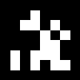
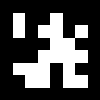
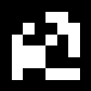
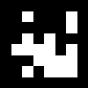
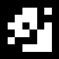
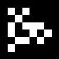
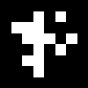
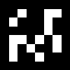
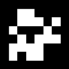
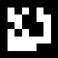

GazeDeck WebSocket Test Client
Connecting to ws://localhost:8765...
X: -- |
Y: -- |
Connected Clients: -- |
Screen: --











Quick Guide:
• Red dot shows gaze position on 1920×1080 screen
• 12 AprilTags positioned exactly at surface_layout.yaml coordinates
• Green = Connected, Red = Disconnected
• Y-axis inverted (Pupil Labs coordinate system)
• Check browser console for debug info